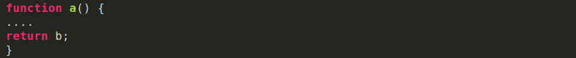

¿Les ha pasado que están súper inspirados escribiendo códgio pero repentinamente necesitan una luz divina que les diga qué npmbre ponerle a la variable que están a punto de escribir?
Como Frontend, hay tantas cosas que debo nombrar en mi día a día: clases para cada elemento HTML, variables en Stlus que puedan ser reutilizables, componentes, archivos, funciones... Tengo que poner a volar mi imaginación para poder lograrlo.
A pesar de que es algo que depende totalmente de nostros y no hay una forma estrictamente correcta o incorrecta de hacerlo, nombrar cada elemento es un trabajo en el que debemos poner empeño, pues se verá impactado en la organización y mantenibilidad de nuestro codigo.
Fanny es parte del Team Platzi. Si quieres una carrera en Frontend, empieza por el Curso de Desarrollo Web y luego Curso de Responsive Desing.
Lo más importante es que el nombre que le asignes siempre refleje el trabajo que está haciendo, de esta forma podemos incluso reducir la necesidad de comnetar cada línea de código con su funcionamiento.
A continuación algunos consejos que hay que seguir para evitar algún desastre a la hora de nombrar un elemento en tu código.Abreviar nombres puede que en algunos casos no sea tan buena idea. Seguramente con el paso del tiempo o cuando un nuevo desarrollador tenga que darle mantenimiento a tu código habrá quedado en el olvido lo que esa variable representa. Lo ideal es utilizar nombres que describan la función de nuestro código.
Por ejemplo, es mucho más descriptivo escrbir:
Que:
Generalmente los lenguajes de programación nom permiten espacios en las variables. Sin embargo hay distintos métodos para separar el conjunto de palabras que conforman una variable y que de esta manera logren ser más legibles. Esto se puede hacer capitalizando cada palabra agrupada (camelCase) o separando cada pabalar con underscore (snake_case).e_case).
Por ejemplo:
Que:

A pesar de que los nombres de variables cortos deben ser sustituidos por nombres de variables más largos y descriptivos, no quiere decir que tenemos que usar frases completas. Es importante que el nombre describa qué es lo que el código asignado hace y no cómo lo hace. Utilizar un nombre largo puede incluso ser más susceptible a errores tipógráficos a la hora de escrbirlo. Se dice que la longitud recomendable es de 2 a 4 palabras o entre 8 a 20 caracteres.
En conclusión nombrar elementos no es dificil, más bien es súper poder o habilidad que va mejorando con la práctica. Nosotros como desarrolladores tenemos la responsabilidad de hacerlo lo mejor posible.
Si recién comienzas a programar, te invito al Curso de programación básica para emepzar a implemetar estos consejos en tus proyectos. y si llevas ya tiempo programando sin hacer uso de ellos, compártenos cómo te va siguiendo estas recomendacioes. Estoy seguro que los desarrolladores que e topen con tu código en el futuro te lo agradecerán.